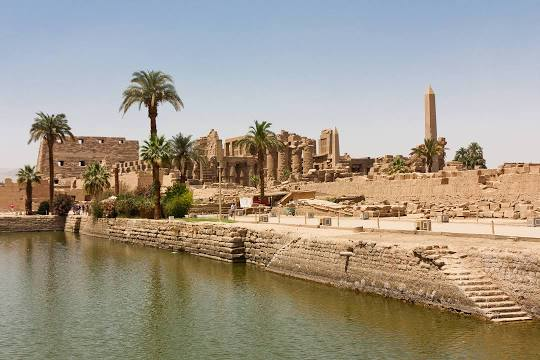

Abu Simbel is a historic site comprising two massive rock-cut temples
in the village of Abu Simbel, Aswan Governorate, Upper Egypt, near the
border with Sudan. It is situated on the western bank of Lake Nasser,
about 230 km southwest of Aswan. The complex is part of the UNESCO
World Heritage Site known as the "Nubian Monuments", which run from
Abu Simbel downriver to Philae, and include Amada, Wadi es-Sebua, and
other Nubian sites. The twin temples were originally carved out of the
mountainside in the 13th century BC, during the 19th Dynasty reign of
the Pharaoh Ramesses II. They serve as a lasting monument to the king
Ramesses II. His wife Nefertari and children can be seen in smaller
figures by his feet, considered to be of lesser importance and were
not given the same position of scale. This commemorates his victory at
the Battle of Kadesh. Their huge external rock relief figures have
become iconic.

The Valley of the Kings, also known as the Valley of the Gates of the
Kings, is a valley in Egypt where, for a period of nearly 500 years
from the 16th to 11th century BC, rock-cut tombs were excavated for
the pharaohs and powerful nobles of the New Kingdom. The valley stands
on the west bank of the Nile opposite Thebes, within the heart of the
Theban Necropolis. The wadi consists of two valleys: the East Valley
and the West Valley. With the 2005 discovery of a new chamber and the
2008 discovery of two further tomb entrances, the valley is known to
contain 63 tombs and chambers. It was the principal burial place of
the major royal figures of the Egyptian New Kingdom, as well as a
number of privileged nobles. The royal tombs are decorated with scenes
from Egyptian mythology and give clues as to the beliefs and funerary
practices of the period. Almost all of the tombs seem to have been
opened and robbed in antiquity, but they still give an idea of the
opulence and power of the pharaohs. This area has been a focus of
archaeological and Egyptological exploration since the end of the
eighteenth century, and its tombs and burials continue to stimulate
research and interest.

The Karnak Temple Complex, commonly known as Karnak, comprises a vast
mix of decayed temples, pylons, chapels, and other buildings near
Luxor, Egypt. Construction at the complex began during the reign of
Senusret I in the Middle Kingdom and continued into the Ptolemaic
Kingdom, although most of the extant buildings date from the New
Kingdom. The area around Karnak was the ancient Egyptian Ipet-isut and
the main place of worship of the 18th Dynastic Theban Triad, with the
god Amun as its head. It is part of the monumental city of Thebes, and
in 1979 it was inscribed on the UNESCO World Heritage List along with
the rest of the city. The Karnak complex gives its name to the nearby,
and partly surrounded, modern village of El-Karnak, 2.5 kilometres
north of Luxor.

The Great Sphinx of Giza is a limestone statue of a reclining sphinx,
a mythical creature with the head of a human, and the body of a lion.
Facing directly from west to east, it stands on the Giza Plateau on
the west bank of the Nile in Giza, Egypt. The face of the Sphinx
appears to represent the pharaoh Khafre. The original shape of the
Sphinx was cut from the bedrock, and has since been restored with
layers of limestone blocks. It measures 73 m long from paw to tail, 20
m high from the base to the top of the head and 19 m wide at its rear
haunches. Its nose was broken off for unknown reasons between the 3rd
and 10th centuries AD. The Sphinx is the oldest known monumental
sculpture in Egypt and one of the most recognisable statues in the
world. The archaeological evidence suggests that it was created by
ancient Egyptians of the Old Kingdom during the reign of Khafre.

Khan el-Khalili is a famous bazaar and souq in the historic center of
Cairo, Egypt. Established as a center of trade in the Mamluk era and
named for one of its several historic caravanserais, the bazaar
district has since become one of Cairo's main attractions for tourists
and Egyptians alike. It is also home to many Egyptian artisans and
workshops involved in the production of traditional crafts and
souvenirs. The name Khan el-Khalili historically referred to a single
building in the area; today it refers to the entire shopping district.